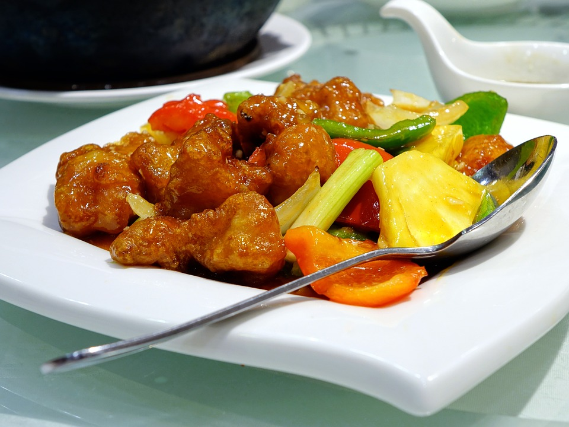

<
家常糖醋猪肉

8.6
综合评分
536
人做过这道菜
方法
将猪肉切成2厘米见方的块，用料酒、生抽、盐腌制20分钟。
锅中放油，油热后将腌制好的猪肉块放入，用中小火慢慢煎至两面金黄，出锅备用。
锅中留少许油，放入切好的姜片和蒜炒香，加入糖，小火慢慢炒至糖溶化并变红色。
放入煎好的猪肉块，加入醋、生抽、老抽、盐，翻煮均匀，加入适量的水，大火烧开后转小火慢炖。
炖至汤汁收干，猪肉糖油亮，出锅即可。
享受！
原料
500
克猪肉五花肉
2
汤匙料酒
2
汤匙生抽
1
汤匙老抽
1/2
茶匙盐
3
汤匙糖
2
汤匙醋
1
片姜，切片
小知识
糖醋猪肉是一道非常经典的家常菜，它的口感独特，酸甜可口，深受大家喜爱。这道菜的关键在于糖醋的比例，以及炖煮的时间，只有掌握好这两个要点，才能做出色香味俱全的糖醋猪肉。
该菜谱发布于 2024-05-06 20:19:17
版权归作者所有，没有作者本人的书面许可任何人不得转载或使用整体或任何部分的内容。